Data analysis of metabolomics and other omics datasets using the structToolbox
Gavin R Lloyd
Phenome Centre Birmingham, University of Birmingham, UKg.r.lloyd@bham.ac.uk
Andris Jankevics
Phenome Centre Birmingham, University of Birmingham, UKa.jankevics@bham.ac.uk
Ralf J Weber
Phenome Centre Birmingham, University of Birmingham, UKr.j.weber@bham.ac.uk Source:
vignettes/data_analysis_omics_using_the_structtoolbox.Rmd
data_analysis_omics_using_the_structtoolbox.RmdAbstract
Data (pre-)processing and data analysis of Metabolomics and other omics datasets using struct and structToolbox, including univariate/multivariate statistics and machine learning approaches.
Introduction
The ‘structToolbox’ includes an extensive set of data
(pre-)processing and analysis tools for metabolomics and other omics,
with a strong emphasis on statistics and machine learning. The methods
and tools have been implemented using class-based templates available
via the struct (Statistics in R Using Class-based
Templates) package. The aim of this vignette is to introduce the reader
to basic and more advanced structToolbox-based operations and
implementations, such as the use of struct objects,
getting/setting methods/parameters, and building workflows for the
analysis of mass spectrometry (MS) and nuclear magnetic resonance
(NMR)-based Metabolomics and proteomics datasets. The workflows
demonstrated here include a wide range of methods and tools including
pre-processing such as filtering, normalisation and scaling, followed by
univariate and/or multivariate statistics, and machine learning
approaches.
Getting started
The latest version of structToolbox compatible with your
current R version can be installed using BiocManager.
# install BiocManager if not present
if (!requireNamespace("BiocManager", quietly = TRUE))
install.packages("BiocManager")
# install structToolbox and dependencies
BiocManager::install("structToolbox")A number of additional packages are needed for this vignette.
## install additional bioc packages for vignette if needed
#BiocManager::install(c('pmp', 'ropls', 'BiocFileCache'))
## install additional CRAN packages if needed
#install.packages(c('cowplot', 'openxlsx'))
suppressPackageStartupMessages({
# Bioconductor packages
library(structToolbox)
library(pmp)
library(ropls)
library(BiocFileCache)
# CRAN libraries
library(ggplot2)
library(gridExtra)
library(cowplot)
library(openxlsx)
})
# use the BiocFileCache
bfc <- BiocFileCache(ask = FALSE)Introduction to struct objects, including models, model
sequences, model charts and ontology.
Introduction
PCA (Principal Component Analysis) and PLS (Partial Least Squares)
are commonly applied methods for exploring and analysing multivariate
datasets. Here we use these two statistical methods to demonstrate the
different types of struct (STatistics in R Using Class
Templates) objects that are available as part of the
structToolbox and how these objects (i.e. class templates)
can be used to conduct unsupervised and supervised multivariate
statistical analysis.
Dataset
For demonstration purposes we will use the “Iris” dataset. This famous (Fisher’s or Anderson’s) dataset contains measurements of sepal length and width and petal length and width, in centimeters, for 50 flowers from each of 3 class of Iris. The class are Iris setosa, versicolor, and virginica. See here (https://stat.ethz.ch/R-manual/R-devel/library/datasets/html/iris.html) for more information.
Note: this vignette is also compatible with the Direct infusion mass spectrometry metabolomics “benchmark” dataset described in Kirwan et al., Sci Data 1, 140012 (2014) (https://doi.org/10.1038/sdata.2014.12).
Both datasets are available as part of the structToolbox package and
already prepared as a DatasetExperiment object.
## Iris dataset (comment if using MTBLS79 benchmark data)
D = iris_DatasetExperiment()
D$sample_meta$class = D$sample_meta$Species
## MTBLS (comment if using Iris data)
# D = MTBLS79_DatasetExperiment(filtered=TRUE)
# M = pqn_norm(qc_label='QC',factor_name='sample_type') +
# knn_impute(neighbours=5) +
# glog_transform(qc_label='QC',factor_name='sample_type') +
# filter_smeta(mode='exclude',levels='QC',factor_name='sample_type')
# M = model_apply(M,D)
# D = predicted(M)
# show info
D## A "DatasetExperiment" object
## ----------------------------
## name: Fisher's Iris dataset
## description: This famous (Fisher's or Anderson's) iris data set gives the measurements in centimeters of
## the variables sepal length and width and petal length and width,
## respectively, for 50 flowers from each of 3 species of iris. The species are
## Iris setosa, versicolor, and virginica.
## data: 150 rows x 4 columns
## sample_meta: 150 rows x 2 columns
## variable_meta: 4 rows x 1 columnsDatasetExperiment objects
The DatasetExperiment object is an extension of the
SummarizedExperiment class used by the Bioconductor
community. It contains three main parts:
-
dataA data frame containing the measured data for each sample. -
sample_metaA data frame of additional information related to the samples e.g. group labels. -
variable_metaA data frame of additional information related to the variables (features) e.g. annotations
Like all struct objects it also contains
name and description fields (called “slots” is
R language).
A key difference between DatasetExperiment and
SummarizedExperiment objects is that the data is
transposed. i.e. for DatasetExperiment objects the samples
are in rows and the features are in columns, while the opposite is true
for SummarizedExperiment objects.
All slots are accessible using dollar notation.
# show some data
head(D$data[,1:4])## Sepal.Length Sepal.Width Petal.Length Petal.Width
## 1 5.1 3.5 1.4 0.2
## 2 4.9 3.0 1.4 0.2
## 3 4.7 3.2 1.3 0.2
## 4 4.6 3.1 1.5 0.2
## 5 5.0 3.6 1.4 0.2
## 6 5.4 3.9 1.7 0.4Using struct model objects
Statistical models
Before we can apply e.g. PCA we first need to create a PCA object. This object contains all the inputs, outputs and methods needed to apply PCA. We can set parameters such as the number of components when the PCA model is created, but we can also use dollar notation to change/view it later.
P = PCA(number_components=15)
P$number_components=5
P$number_components## [1] 5The inputs for a model can be listed using
param_ids(object):
param_ids(P)## [1] "number_components"Or a summary of the object can be printed to the console:
P## A "PCA" object
## --------------
## name: Principal Component Analysis (PCA)
## description: PCA is a multivariate data reduction technique. It summarises the data in a smaller number of
## Principal Components that maximise variance.
## input params: number_components
## outputs: scores, loadings, eigenvalues, ssx, correlation, that
## predicted: that
## seq_in: dataModel sequences
Unless you have good reason not to, it is usually sensible to mean
centre the columns of the data before PCA. Using the STRUCT
framework we can create a model sequence that will mean centre and then
apply PCA to the mean centred data.
M = mean_centre() + PCA(number_components = 4)In structToolbox mean centring and PCA are both model
objects, and joining them using “+” creates a model_sequence object. In
a model_sequence the outputs of the first object (mean centring) are
automatically passed to the inputs of the second object (PCA), which
allows you chain together modelling steps in order to build a
workflow.
The objects in the model_sequence can be accessed by indexing, and we can combine this with dollar notation. For example, the PCA object is the second object in our sequence and we can access the number of components as follows:
M[2]$number_components## [1] 4Training/testing models
Model and model_sequence objects need to be trained using data in the
form of a DatasetExperiment object. For example, the PCA
model sequence we created (M) can be trained using the iris
DatasetExperiment object (‘D’).
M = model_train(M,D)This model sequence has now mean centred the original data and calculated the PCA scores and loadings.
Model objects can be used to generate predictions for test datasets. For the PCA model sequence this involves mean centring the test data using the mean of training data, and the projecting the centred test data onto the PCA model using the loadings. The outputs are all stored in the model sequence and can be accessed using dollar notation. For this example we will just use the training data again (sometimes called autoprediction), which for PCA allows us to explore the training data in more detail.
M = model_predict(M,D)Sometimes models don’t make use the training/test approach
e.g. univariate statsitics, filtering etc. For these models the
model_apply method can be used instead. For models that do
provide training/test methods, model_apply applies
autoprediction by default i.e. it is a short-cut for applying
model_train and model_predict to the same
data.
M = model_apply(M,D)The available outputs for an object can be listed and accessed like input params, using dollar notation:
output_ids(M[2])## [1] "scores" "loadings" "eigenvalues" "ssx" "correlation"
## [6] "that"
M[2]$scores## A "DatasetExperiment" object
## ----------------------------
## name:
## description:
## data: 150 rows x 4 columns
## sample_meta: 150 rows x 2 columns
## variable_meta: 4 rows x 1 columnsModel charts
The struct framework includes chart objects. Charts
associated with a model object can be listed.
chart_names(M[2])## [1] "pca_biplot" "pca_correlation_plot" "pca_dstat_plot"
## [4] "pca_loadings_plot" "pca_scores_plot" "pca_scree_plot"Like model objects, chart objects need to be created before they can be used. Here we will plot the PCA scores plot for our mean centred PCA model.
C = pca_scores_plot(factor_name='class') # colour by class
chart_plot(C,M[2])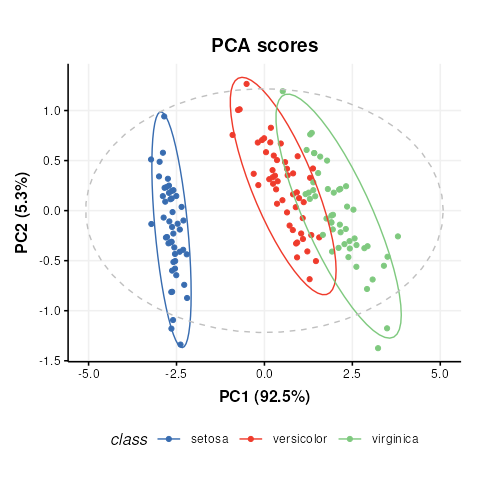
Note that indexing the PCA model is required because the
pca_scores_plot object requires a PCA object as input, not
a model_sequence.
If we make changes to the input parameters of the chart,
chart_plot must be called again to see the effects.
# add petal width to meta data of pca scores
M[2]$scores$sample_meta$example=D$data[,1]
# update plot
C$factor_name='example'
chart_plot(C,M[2])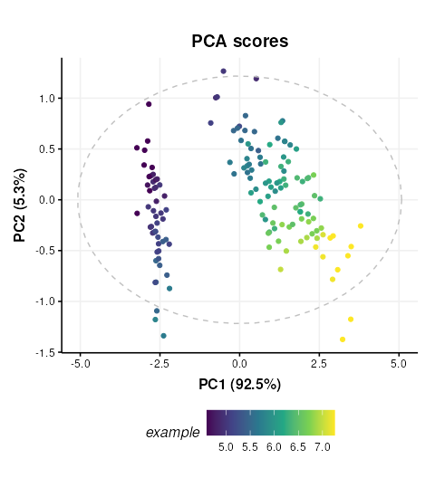
The chart_plot method returns a ggplot object so that
you can easily combine it with other plots using the
gridExtra or cowplot packages for example.
# scores plot
C1 = pca_scores_plot(factor_name='class') # colour by class
g1 = chart_plot(C1,M[2])
# scree plot
C2 = pca_scree_plot()
g2 = chart_plot(C2,M[2])
# arange in grid
grid.arrange(grobs=list(g1,g2),nrow=1)Ontology
Within the struct framework (and
structToolbox) an ontology slot is provided to
allow for standardardised definitions for objects and its inputs and
outputs using the Ontology Lookup Service (OLS).
For example, STATO is a general purpose STATistics Ontology (http://stato-ontology.org). From the webpage:
Its aim is to provide coverage for processes such as statistical tests, their conditions of application, and information needed or resulting from statistical methods, such as probability distributions, variables, spread and variation metrics. STATO also covers aspects of experimental design and description of plots and graphical representations commonly used to provide visual cues of data distribution or layout and to assist review of the results.
The ontology for an object can be set by assigning the ontology term
identifier to the ontology slot of any struct_class object
at design time. The ids can be listed using $ notation:
# create an example PCA object
P=PCA()
# ontology for the PCA object
P$ontology## [1] "OBI:0200051"The ontology method can be used obtain more detailed
ontology information. When cache = NULL the
struct package will automatically attempt to use the OLS
API (via the rols package) to obtain a name and description
for the provided identifiers. Here we used cached versions of the
ontology definitions provided in the structToolbox package
to prevent issues connecting to the OLS API when building the
package.
ontology(P,cache = ontology_cache()) # set cache = NULL (default) for online use## [[1]]
## An object of class "ontology_list"
## Slot "terms":
## [[1]]
## term id: OBI:0200051
## ontology: obi
## label: principal components analysis dimensionality reduction
## description: A principal components analysis dimensionality reduction is a dimensionality reduction
## achieved by applying principal components analysis and by keeping low-order principal
## components and excluding higher-order ones.
## iri: http://purl.obolibrary.org/obo/OBI_0200051
##
##
##
## [[2]]
## An object of class "ontology_list"
## Slot "terms":
## [[1]]
## term id: STATO:0000555
## ontology: stato
## label: number of predictive components
## description: number of predictive components is a count used as input to the principle component analysis
## (PCA)
## iri: http://purl.obolibrary.org/obo/STATO_0000555Note that the ontology method returns definitions for
the object (PCA) and the inputs/outputs (number_of_components).
Validating supervised statistical models
Validation is an important aspect of chemometric modelling. The
struct framework enables this kind of iterative model
testing through iterator objects.
Cross-validation
Cross validation is a common technique for assessing the performance of classification models. For this example we will use a Partial least squares-discriminant analysis (PLS-DA) model. Data should be mean centred prior to PLS, so we will build a model sequence first.
M = mean_centre() + PLSDA(number_components=2,factor_name='class')
M## A model_seq object containing:
##
## [1]
## A "mean_centre" object
## ----------------------
## name: Mean centre
## description: The mean sample is subtracted from all samples in the data matrix. The features in the centred
## matrix all have zero mean.
## input params: mode
## outputs: centred, mean_data, mean_sample_meta
## predicted: centred
## seq_in: data
##
## [2]
## A "PLSDA" object
## ----------------
## name: Partial least squares discriminant analysis
## description: PLS is a multivariate regression technique that extracts latent variables maximising
## covariance between the input data and the response. The Discriminant Analysis
## variant uses group labels in the response variable. For >2 groups a 1-vs-all
## approach is used. Group membership can be predicted for test samples based on
## a probability estimate of group membership, or the estimated y-value.
## input params: number_components, factor_name, pred_method
## outputs: scores, loadings, yhat, design_matrix, y, reg_coeff, probability, vip, pls_model, pred, threshold, sr, sr_pvalue
## predicted: pred
## seq_in: dataiterator objects like the k-fold cross-validation object
(kfold_xval) can be created just like any other
struct object. Parameters can be set at creation using the
equals sign, and accessed or changed later using dollar notation.
# create object
XCV = kfold_xval(folds=5,factor_name='class')
# change the number of folds
XCV$folds=10
XCV$folds## [1] 10The model to be cross-validated can be set/accessed using the
models method.
## A model_seq object containing:
##
## [1]
## A "mean_centre" object
## ----------------------
## name: Mean centre
## description: The mean sample is subtracted from all samples in the data matrix. The features in the centred
## matrix all have zero mean.
## input params: mode
## outputs: centred, mean_data, mean_sample_meta
## predicted: centred
## seq_in: data
##
## [2]
## A "PLSDA" object
## ----------------
## name: Partial least squares discriminant analysis
## description: PLS is a multivariate regression technique that extracts latent variables maximising
## covariance between the input data and the response. The Discriminant Analysis
## variant uses group labels in the response variable. For >2 groups a 1-vs-all
## approach is used. Group membership can be predicted for test samples based on
## a probability estimate of group membership, or the estimated y-value.
## input params: number_components, factor_name, pred_method
## outputs: scores, loadings, yhat, design_matrix, y, reg_coeff, probability, vip, pls_model, pred, threshold, sr, sr_pvalue
## predicted: pred
## seq_in: dataAlternatively, iterators can be combined with models using the
multiplication symbol was shorthand for the models
assignement method:
# cross validation of a mean centred PLSDA model
XCV = kfold_xval(
folds=5,
method='venetian',
factor_name='class') *
(mean_centre() + PLSDA(factor_name='class'))The run method can be used with any
iterator object. The iterator will then run the set model
or model sequence multiple times.
In this case we run cross-validation 5 times, splitting the data into different training and test sets each time.
The run method also needs a metric to be
specified, which is another type of struct object. This
metric may be calculated once after all iterations, or after each
iteration, depending on the iterator type (resampling, permutation etc).
For cross-validation we will calculate “balanced accuracy” after all
iterations.
XCV = run(XCV,D,balanced_accuracy())
XCV$metric## metric mean sd
## 1 balanced_accuracy 0.11 NANote The balanced_accuracy metric actually reports
1-accuracy, so a value of 0 indicates perfect performance. The standard
deviation “sd” is NA in this example because there is only one
permutation.
Like other struct objects, iterators can have chart
objects associated with them. The chart_names function will
list them for an object.
chart_names(XCV)## [1] "kfoldxcv_grid" "kfoldxcv_metric"Charts for iterator objects can be plotted in the same
way as charts for any other object.
C = kfoldxcv_grid(
factor_name='class',
level=levels(D$sample_meta$class)[2]) # first level
chart_plot(C,XCV)It is possible to combine multiple iterators by using the multiplication symbol. This is equivalent to nesting one iterator inside the other. For example, we can repeat our cross-validation multiple times by permuting the sample order.
# permute sample order 10 times and run cross-validation
P = permute_sample_order(number_of_permutations = 10) *
kfold_xval(folds=5,factor_name='class')*
(mean_centre() + PLSDA(factor_name='class',number_components=2))
P = run(P,D,balanced_accuracy())
P$metric## metric mean sd
## 1 balanced_accuracy 0.1095 0.004972145A typical workflow for processing and analysing mass spectrometry-based metabolomics data.
Introduction
This vignette provides an overview of a structToolbox
workflow implemented to process (e.g. filter features, signal drift and
batch correction, normalise and missing value imputation) mass
spectrometry data. The workflow exists of methods that are part of the
Peak Matrix Processing (pmp) package,
including a range of additional filters that are described in Kirwan et
al., 2013,
2014.
Some packages are required for this vignette in addition
structToolbox:
Dataset
For demonstration purposes we will process and analyse the MTBLS79 dataset (‘Dataset 7:SFPM’ Kirwan et al., 2014. This dataset represents a systematic evaluation of the reproducibility of a multi-batch direct-infusion mass spectrometry (DIMS)-based metabolomics study of cardiac tissue extracts. It comprises twenty biological samples (cow vs. sheep) that were analysed repeatedly, in 8 batches across 7 days, together with a concurrent set of quality control (QC) samples. Data are presented from each step of the data processing workflow and are available through MetaboLights (https://www.ebi.ac.uk/metabolights/MTBLS79).
The MTBLS79_DatasetExperiment object included in the
structToolbox package is a processed version of the MTBLS79
dataset available in peak matrix processing (pmp) package.
This vignette describes step by step how the structToolbox
version was created from the pmp version (i.e. ‘Dataset
7:SFPM’ from the Scientific Data publication - https://doi.org/10.1038/sdata.2014.12).
The SummarizedExperiment object from the
pmp package needs to be converted to a
DatasetExperiment object for use with
structToolbox.
# the pmp SE object
SE = MTBLS79
# convert to DE
DE = as.DatasetExperiment(SE)
DE$name = 'MTBLS79'
DE$description = 'Converted from SE provided by the pmp package'
# add a column indicating the order the samples were measured in
DE$sample_meta$run_order = 1:nrow(DE)
# add a column indicating if the sample is biological or a QC
Type=as.character(DE$sample_meta$Class)
Type[Type != 'QC'] = 'Sample'
DE$sample_meta$Type = factor(Type)
# add a column for plotting batches
DE$sample_meta$batch_qc = DE$sample_meta$Batch
DE$sample_meta$batch_qc[DE$sample_meta$Type=='QC']='QC'
# convert to factors
DE$sample_meta$Batch = factor(DE$sample_meta$Batch)
DE$sample_meta$Type = factor(DE$sample_meta$Type)
DE$sample_meta$Class = factor(DE$sample_meta$Class)
DE$sample_meta$batch_qc = factor(DE$sample_meta$batch_qc)
# print summary
DE## A "DatasetExperiment" object
## ----------------------------
## name: MTBLS79
## description: Converted from SE provided by the pmp package
## data: 172 rows x 2488 columns
## sample_meta: 172 rows x 7 columns
## variable_meta: 2488 rows x 0 columnsFull processing of the data set requires a number of steps. These
will be applied using a single struct model sequence
(model_seq).
Signal drift and batch correction
A batch correction algorithm is applied to reduce intra- and inter-
batch variations in the dataset. Quality Control-Robust Spline
Correction (QC-RSC) is provided in the pmp package, and it
has been wrapped into a structToolbox object called
sb_corr.
M = # batch correction
sb_corr(
order_col='run_order',
batch_col='Batch',
qc_col='Type',
qc_label='QC',
spar_lim = c(0.6,0.8)
)
M = model_apply(M,DE)The figure below shows a plot of a feature vs run order, before and after the correction. The fitted spline for each batch is shown in grey. It can be seen that the correction has removed instrument drift within and between batches.
C = feature_profile(
run_order='run_order',
qc_label='QC',
qc_column='Type',
colour_by='batch_qc',
feature_to_plot='200.03196',
plot_sd=FALSE
)
# plot and modify using ggplot2
chart_plot(C,M,DE)+ylab('Peak area')+ggtitle('Before')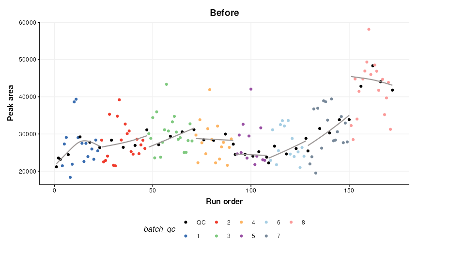
chart_plot(C,predicted(M))+ylab('Peak area')+ggtitle('After')An additional step is added to the published workflow to remove any
feature not corrected by QCRCMS. This can occur if there are not enough
measured QC values within a batch. QCRMS in the
pmp package currently returns NA for all samples in the
feature where this occurs. Features where this occurs will be
excluded.
M2 = filter_na_count(
threshold=3,
factor_name='Batch'
)
M2 = model_apply(M2,predicted(M))
# calculate number of features removed
nc = ncol(DE) - ncol(predicted(M2))
cat(paste0('Number of features removed: ', nc))## Number of features removed: 425The output of this step is the output of
MTBLS79_DatasetExperiment(filtered=FALSE).
Feature filtering
In the journal article three spectral cleaning steps are applied. In
the first filter a Kruskal-Wallis test is used to identify features not
reliably detected in the QC samples (p < 0.0001) of all batches. We
follow the same parameters as the original article and do not use
multiple test correction (mtc = 'none').
M3 = kw_rank_sum(
alpha=0.0001,
mtc='none',
factor_names='Batch',
predicted='significant'
) +
filter_by_name(
mode='exclude',
dimension = 'variable',
seq_in = 'names',
names='seq_fcn', # this is a placeholder and will be replaced by seq_fcn
seq_fcn=function(x){return(x[,1])}
)
M3 = model_apply(M3, predicted(M2))
nc = ncol(predicted(M2)) - ncol(predicted(M3))
cat(paste0('Number of features removed: ', nc))## Number of features removed: 262To make use of univariate tests such as kw_rank_sum as a
filter some advanced features of struct are needed. Slots
predicted, and seq_in are used to ensure the
correct output of the univariate test is connected to the correct input
of a feature filter using filter_by_name. Another slot
seq_fcn is used to extract the relevant column of the
predicted output so that it is compatible with the
seq_in input. A placeholder is used for the “names”
parameter (names = 'place_holder') as this input will be
replaced by the output from seq_fcn.
The second filter is a Wilcoxon Signed-Rank test. It is used to
identify features that are not representative of the average of the
biological samples (p < 1e-14). Again we make use of
seq_in and seq_fcn.
M4 = wilcox_test(
alpha=1e-14,
factor_names='Type',
mtc='none',
predicted = 'significant'
) +
filter_by_name(
mode='exclude',
dimension='variable',
seq_in='names',
names='place_holder',
seq_fcn=function(x){return(x$significant)}
)
M4 = model_apply(M4, predicted(M3))
nc = ncol(predicted(M3)) - ncol(predicted(M4))
cat(paste0('Number of features removed: ', nc))## Number of features removed: 169Finally, an RSD filter is used to remove features with high analytical variation (QC RSD > 20 removed)
M5 = rsd_filter(
rsd_threshold=20,
factor_name='Type'
)
M5 = model_apply(M5,predicted(M4))
nc = ncol(predicted(M4)) - ncol(predicted(M5))
cat(paste0('Number of features removed: ', nc))## Number of features removed: 53The output of this filter is the output of
MTBLS79_DatasetExperiment(filtered=TRUE).
Normalisation, missing value imputation and scaling
We will apply a number of common pre-processing steps to the filtered peak matrix that are identical to steps applied in are described in Kirwan et al. 2013, 2014.
- Probabilistic Quotient Normalisation (PQN)
- k-nearest neighbours imputation (k = 5)
- Generalised log transform (glog)
These steps prepare the data for multivariate analysis by accounting for sample concentration differences, imputing missing values and scaling the data.
# peak matrix processing
M6 = pqn_norm(qc_label='QC',factor_name='Type') +
knn_impute(neighbours=5) +
glog_transform(qc_label='QC',factor_name='Type')
M6 = model_apply(M6,predicted(M5))Exploratory Analysis
Principal Component Analysis (PCA) can be used to visualise high-dimensional data. It is an unsupervised method that maximises variance in a reduced number of latent variables, or principal components.
# PCA
M7 = mean_centre() + PCA(number_components = 2)
# apply model sequence to data
M7 = model_apply(M7,predicted(M6))
# plot pca scores
C = pca_scores_plot(factor_name=c('Sample_Rep','Class'),ellipse='none')
chart_plot(C,M7[2]) + coord_fixed() +guides(colour=FALSE)## Warning: The `<scale>` argument of `guides()` cannot be `FALSE`. Use "none" instead as
## of ggplot2 3.3.4.
## This warning is displayed once every 8 hours.
## Call `lifecycle::last_lifecycle_warnings()` to see where this warning was
## generated.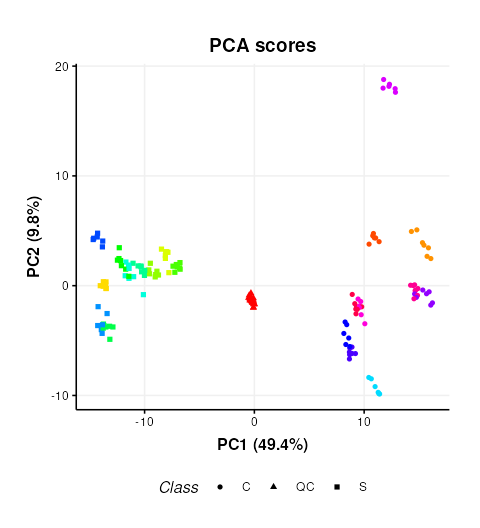
This plot is very similar to Figure 3b of the original publication link. Sample replicates are represented by colours and samples groups (C = cow and S = Sheep) by different shapes.
Plotting the scores and colouring by Batch indicates that the signal/batch correction was effective as all batches are overlapping.
# chart object
C = pca_scores_plot(factor_name=c('Batch'),ellipse='none')
# plot
chart_plot(C,M7[2]) + coord_fixed()Partial Least Squares (PLS) analysis of a untargeted LC-MS-based clinical metabolomics dataset.
Introduction
The aim of this vignette is to demonstrate how to 1) apply and validate Partial Least Squares (PLS) analysis using the structToolbox, 2) reproduce statistical analysis in Thevenot et al. (2015) and 3. compare different implementations of PLS.
Dataset
The objective of the original study was to: > …study the influence of age, body mass index (bmi), and gender on metabolite concentrations in urine, by analysing 183 samples from a cohort of adults with liquid chromatography coupled to high-resolution mass spectrometry.
The “Sacurine” dataset needs to be converted to a
DatasetExperiment object. The ropls
package provides the data as a list containing a
dataMatrix, sampleMetadata and
variableMetadata.
data('sacurine',package = 'ropls')
# the 'sacurine' list should now be available
# move the annotations to a new column and rename the features by index to avoid issues
# later when data.frames get transposed and names get checked/changed
sacurine$variableMetadata$annotation=rownames(sacurine$variableMetadata)
rownames(sacurine$variableMetadata)=1:nrow(sacurine$variableMetadata)
colnames(sacurine$dataMatrix)=1:ncol(sacurine$dataMatrix)
# create DatasetExperiment
DE = DatasetExperiment(data = data.frame(sacurine$dataMatrix),
sample_meta = sacurine$sampleMetadata,
variable_meta = sacurine$variableMetadata,
name = 'Sacurine data',
description = 'See ropls package documentation for details')
# print summary
DE## A "DatasetExperiment" object
## ----------------------------
## name: Sacurine data
## description: See ropls package documentation for details
## data: 183 rows x 109 columns
## sample_meta: 183 rows x 3 columns
## variable_meta: 109 rows x 4 columnsData preprocessing
The Sacurine dataset used within this vignette has already been pre-processed:
After signal drift and batch effect correction of intensities, each urine profile was normalized to the osmolality of the sample. Finally, the data were log10 transformed.
Exploratory data analysis
Since the data has already been processed the data can be visualised
using Principal Component Analysis (PCA) without further pre-processing.
The ropls package automatically applies unit variance
scaling (autoscaling) by default. The same approach is applied here.
# prepare model sequence
M = autoscale() + PCA(number_components = 5)
# apply model sequence to dataset
M = model_apply(M,DE)
# pca scores plots
g=list()
for (k in colnames(DE$sample_meta)) {
C = pca_scores_plot(factor_name = k)
g[[k]] = chart_plot(C,M[2])
}
# plot using cowplot
plot_grid(plotlist=g, nrow=1, align='vh', labels=c('A','B','C'))The third plot coloured by gender (C) is identical to Figure 2 of the
ropls
package vignette. The structToolbox package provides a
range of PCA-related diagnostic plots, including D-statistic, scree, and
loadings plots. These plots can be used to further explore the variance
of the data.
C = pca_scree_plot()
g1 = chart_plot(C,M[2])
C = pca_loadings_plot()
g2 = chart_plot(C,M[2])
C = pca_dstat_plot(alpha=0.95)
g3 = chart_plot(C,M[2])
p1=plot_grid(plotlist = list(g1,g2),align='h',nrow=1,axis='b')
p2=plot_grid(plotlist = list(g3),nrow=1)
plot_grid(p1,p2,nrow=2)Partial Least Squares (PLS) analysis
The ropls package uses its own implementation of the
(O)PLS algorithms. structToolbox uses the pls
package, so it is interesting to compare the outputs from both
approaches. For simplicity only the scores plots are compared.
# prepare model sequence
M = autoscale() + PLSDA(factor_name='gender')
M = model_apply(M,DE)
C = pls_scores_plot(factor_name = 'gender')
chart_plot(C,M[2])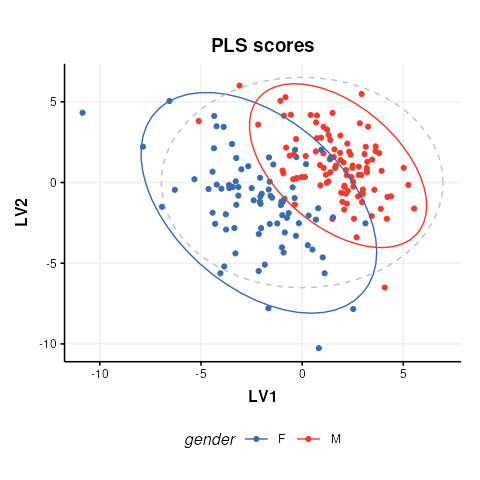
The plot is similar to fig.3 of the ropls
vignette. Differences are due to inverted LV axes, a common occurrence
with the NIPALS algorithm (used by both structToolbox and
ropls) which depends on how the algorithm is
initialised.
To compare the R2 values for the model in structToolbox we have to use a regression model, instead of a discriminant model. For this we convert the gender factor to a numeric variable before applying the model.
# convert gender to numeric
DE$sample_meta$gender=as.numeric(DE$sample_meta$gender)
# models sequence
M = autoscale(mode='both') + PLSR(factor_name='gender',number_components=3)
M = model_apply(M,DE)
# some diagnostic charts
C = plsr_cook_dist()
g1 = chart_plot(C,M[2])
C = plsr_prediction_plot()
g2 = chart_plot(C,M[2])
C = plsr_qq_plot()
g3 = chart_plot(C,M[2])
C = plsr_residual_hist()
g4 = chart_plot(C,M[2])
plot_grid(plotlist = list(g1,g2,g3,g4), nrow=2,align='vh')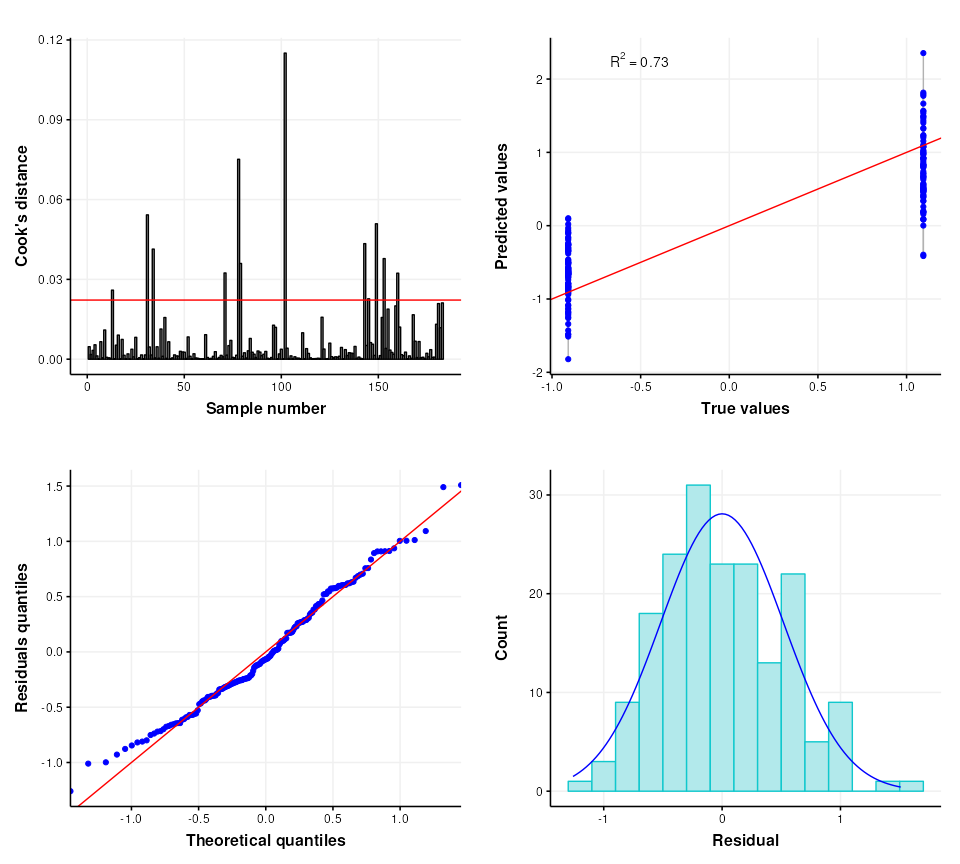
The ropls package automatically applies cross-validation
to asses the performance of the PLSDA model. In
structToolbox this is applied separately to give more
control over the approach used if desired. The default cross-validation
used by the ropls package is 7-fold cross-validation and we
replicate that here.
# model sequence
M = kfold_xval(folds=7, factor_name='gender') *
(autoscale(mode='both') + PLSR(factor_name='gender'))
M = run(M,DE,r_squared())Training set R2: 0.6975706 0.6798415 0.646671 0.6532914 0.7109769 0.670777 0.6935344
Test set Q2: 0.5460723
The validity of the model can further be assessed using permutation testing. For this we will return to a discriminant model.
# reset gender to original factor
DE$sample_meta$gender=sacurine$sampleMetadata$gender
# model sequence
M = permutation_test(number_of_permutations = 10, factor_name='gender') *
kfold_xval(folds=7,factor_name='gender') *
(autoscale() + PLSDA(factor_name='gender',number_components = 3))
M = run(M,DE,balanced_accuracy())
C = permutation_test_plot(style='boxplot')
chart_plot(C,M)+ylab('1 - balanced accuracy')The permuted models have a balanced accuracy of around 50%, which is to be expected for a dataset with two groups. The unpermuted models have a balanced accuracy of around 90% and is therefore much better than might be expected to occur by chance.
Univariate and multivariate statistical analysis of a NMR-based clinical metabolomics dataset.
Introduction
The purpose of this vignette is to demonstrate the different functionalities and methods that are available as part of the structToolbox and reproduce the data analysis reported in Mendez et al., (2020) and Chan et al., (2016).
Dataset
The 1H-NMR dataset used and described in Mendez et al., (2020) and in this vignette contains processed spectra of urine samples obtained from gastric cancer and healthy patients Chan et al., (2016). The experimental raw data is available through Metabolomics Workbench (PR000699) and the processed version is available from here as an Excel data file.
As a first step we need to reorganise and convert the Excel data file
into a DatasetExperiment object. Using the openxlsx package
the file can be read directly into an R data.frame and then
manipulated as required.
url = 'https://github.com/CIMCB/MetabWorkflowTutorial/raw/master/GastricCancer_NMR.xlsx'
# read in file directly from github...
# X=read.xlsx(url)
# ...or use BiocFileCache
path = bfcrpath(bfc,url)
X = read.xlsx(path)
# sample meta data
SM=X[,1:4]
rownames(SM)=SM$SampleID
# convert to factors
SM$SampleType=factor(SM$SampleType)
SM$Class=factor(SM$Class)
# keep a numeric version of class for regression
SM$Class_num = as.numeric(SM$Class)
## data matrix
# remove meta data
X[,1:4]=NULL
rownames(X)=SM$SampleID
# feature meta data
VM=data.frame(idx=1:ncol(X))
rownames(VM)=colnames(X)
# prepare DatasetExperiment
DE = DatasetExperiment(
data=X,
sample_meta=SM,
variable_meta=VM,
description='1H-NMR urinary metabolomic profiling for diagnosis of gastric cancer',
name='Gastric cancer (NMR)')
DE## A "DatasetExperiment" object
## ----------------------------
## name: Gastric cancer (NMR)
## description: 1H-NMR urinary metabolomic profiling for diagnosis of gastric cancer
## data: 140 rows x 149 columns
## sample_meta: 140 rows x 5 columns
## variable_meta: 149 rows x 1 columnsData pre-processing and quality assessment
It is good practice to remove any features that may be of low quality, and to assess the quality of the data in general. In the Tutorial features with QC-RSD > 20% and where more than 10% of the features are missing are retained.
# prepare model sequence
M = rsd_filter(rsd_threshold=20,qc_label='QC',factor_name='Class') +
mv_feature_filter(threshold = 10,method='across',factor_name='Class')
# apply model
M = model_apply(M,DE)
# get the model output
filtered = predicted(M)
# summary of filtered data
filtered## A "DatasetExperiment" object
## ----------------------------
## name: Gastric cancer (NMR)
## description: 1H-NMR urinary metabolomic profiling for diagnosis of gastric cancer
## data: 140 rows x 53 columns
## sample_meta: 140 rows x 5 columns
## variable_meta: 53 rows x 1 columnsNote there is an additional feature vs the the processing reported by Mendez et. al. because the filters here use >= or <= instead of > and <.
After suitable scaling and transformation PCA can be used to assess data quality. It is expected that the biological variance (samples) will be larger than the technical variance (QCs). In the workflow that we are reproducing (link) the following steps were applied:
- log10 transform
- autoscaling (scaled to unit variance)
- knn imputation (3 neighbours)
The transformed and scaled matrix in then used as input to PCA. Using
struct we can chain all of these steps into a single model
sequence.
# prepare the model sequence
M = log_transform(base = 10) +
autoscale() +
knn_impute(neighbours = 3) +
PCA(number_components = 10)
# apply model sequence to data
M = model_apply(M,filtered)
# get the transformed, scaled and imputed matrix
TSI = predicted(M[3])
# scores plot
C = pca_scores_plot(factor_name = 'SampleType')
g1 = chart_plot(C,M[4])
# loadings plot
C = pca_loadings_plot()
g2 = chart_plot(C,M[4])
plot_grid(g1,g2,align='hv',nrow=1,axis='tblr')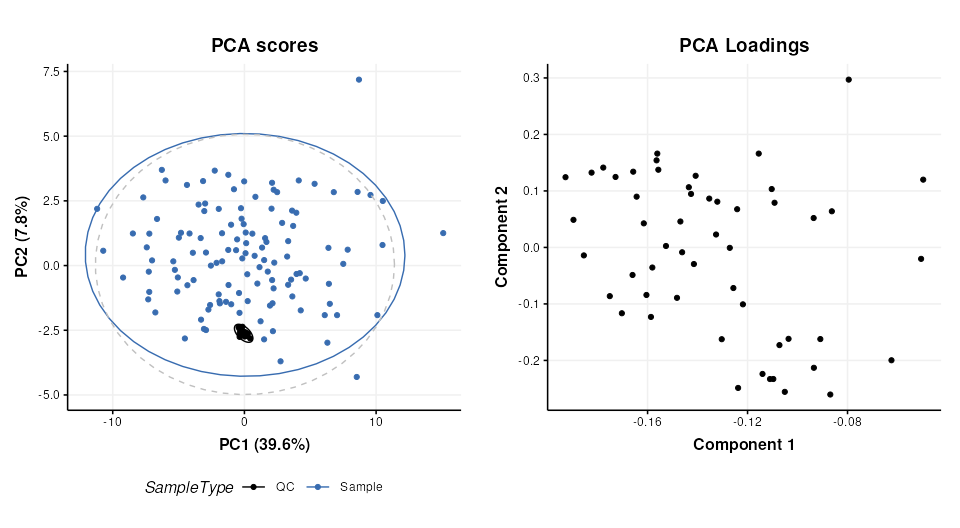
Univariate statistics
structToolbox provides a number of objects for ttest,
counting numbers of features etc. For brevity only the ttest is
calculated for comparison with the workflow we are following (link).
The QC samples need to be excluded, and the data reduced to only the GC
and HE groups.
# prepare model
TT = filter_smeta(mode='include',factor_name='Class',levels=c('GC','HE')) +
ttest(alpha=0.05,mtc='fdr',factor_names='Class')
# apply model
TT = model_apply(TT,filtered)
# keep the data filtered by group for later
filtered = predicted(TT[1])
# convert to data frame
out=as_data_frame(TT[2])
# show first few features
head(out)## t_statistic t_p_value t_significant estimate.mean.GC estimate.mean.HE
## M4 -3.5392652 0.008421042 TRUE 26.47778 51.73947
## M5 1.4296604 0.410396437 FALSE 265.11860 169.91500
## M7 2.7456506 0.051494976 FALSE 118.52558 53.98718
## M8 -2.1294198 0.178392032 FALSE 54.39535 79.26750
## M11 0.5106536 0.776939682 FALSE 201.34390 171.27949
## M14 -1.4786810 0.403091881 FALSE 61.53171 83.90250
## lower upper
## M4 -39.56162 -10.961769
## M5 -38.04747 228.454679
## M7 17.60818 111.468619
## M8 -48.20069 -1.543611
## M11 -87.30604 147.434869
## M14 -52.57754 7.835950Multivariate statistics and machine learning
Training and Test sets
Splitting data into training and test sets is an important aspect of
machine learning. In structToolbox this is implemented
using the split_data object for random subsampling across
the whole dataset, and stratified_split for splitting based
on group sizes, which is the approach used by Mendez et al.
# prepare model
M = stratified_split(p_train=0.75,factor_name='Class')
# apply to filtered data
M = model_apply(M,filtered)
# get data from object
train = M$training
train## A "DatasetExperiment" object
## ----------------------------
## name: Gastric cancer (NMR)
## (Training set)
## description: • 1H-NMR urinary metabolomic profiling for diagnosis of gastric cancer
## • A subset of the data has been selected as a training set
## data: 62 rows x 53 columns
## sample_meta: 62 rows x 5 columns
## variable_meta: 53 rows x 1 columns
cat('\n')
test = M$testing
test## A "DatasetExperiment" object
## ----------------------------
## name: Gastric cancer (NMR)
## (Testing set)
## description: • 1H-NMR urinary metabolomic profiling for diagnosis of gastric cancer
## • A subset of the data has been selected as a test set
## data: 21 rows x 53 columns
## sample_meta: 21 rows x 5 columns
## variable_meta: 53 rows x 1 columnsOptimal number of PLS components
In Mendez et al a k-fold cross-validation is used to determine the
optimal number of PLS components. 100 bootstrap iterations are used to
generate confidence intervals. In strucToolbox these are
implemented using “iterator” objects, that can be combined with model
objects. R2 is used as the metric for optimisation, so the
PLSR model in structToolbox will be used. For speed only 10
bootstrap iterations are used here.
# scale/transform training data
M = log_transform(base = 10) +
autoscale() +
knn_impute(neighbours = 3,by='samples')
# apply model
M = model_apply(M,train)
# get scaled/transformed training data
train_st = predicted(M)
# prepare model sequence
MS = grid_search_1d(
param_to_optimise = 'number_components',
search_values = as.numeric(c(1:6)),
model_index = 2,
factor_name = 'Class_num',
max_min = 'max') *
permute_sample_order(
number_of_permutations = 10) *
kfold_xval(
folds = 5,
factor_name = 'Class_num') *
(mean_centre(mode='sample_meta')+
PLSR(factor_name='Class_num'))
# run the validation
MS = struct::run(MS,train_st,r_squared())
#
C = gs_line()
chart_plot(C,MS)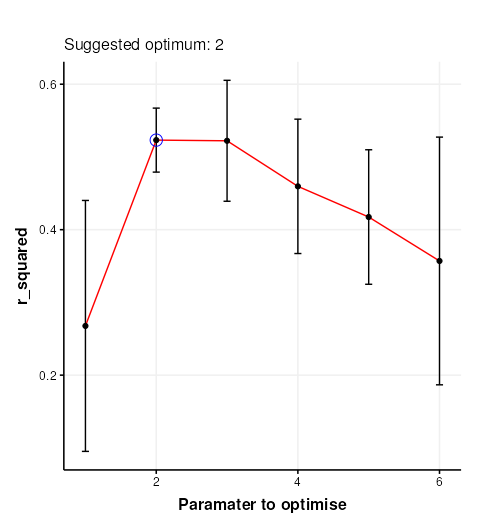
The chart plotted shows Q2, which is comparable with Figure 13 of Mendez et al . Two components were selected by Mendez et al, so we will use that here.
PLS model evalutation
To evaluate the model for discriminant analysis in structToolbox the
PLSDA model is appropriate.
# prepare the discriminant model
P = PLSDA(number_components = 2, factor_name='Class')
# apply the model
P = model_apply(P,train_st)
# charts
C = plsda_predicted_plot(factor_name='Class',style='boxplot')
g1 = chart_plot(C,P)
C = plsda_predicted_plot(factor_name='Class',style='density')
g2 = chart_plot(C,P)+xlim(c(-2,2))
C = plsda_roc_plot(factor_name='Class')
g3 = chart_plot(C,P)
plot_grid(g1,g2,g3,align='vh',axis='tblr',nrow=1, labels=c('A','B','C'))## A "AUC" object
## --------------
## name: Area under ROC curve
## description: The area under the ROC curve of a classifier is estimated using the trapezoid method.
## value: 0.9739583Note that the default cutoff in A and B of the figure above for the
PLS models in structToolbox is 0, because groups are
encoded as +/-1. This has no impact on the overall performance of the
model.
Permutation test
A permutation test can be used to assess how likely the observed
result is to have occurred by chance. In structToolbox
permutation_test is an iterator object that can be combined
with other iterators and models.
# model sequence
MS = permutation_test(number_of_permutations = 20,factor_name = 'Class_num') *
kfold_xval(folds = 5,factor_name = 'Class_num') *
(mean_centre(mode='sample_meta') + PLSR(factor_name='Class_num', number_components = 2))
# run iterator
MS = struct::run(MS,train_st,r_squared())
# chart
C = permutation_test_plot(style = 'density')
chart_plot(C,MS) + xlim(c(-1,1)) + xlab('R Squared')This plot is comparable to the bottom half of Figure 17 in Mendez et. al.. The unpermuted (true) Q2 values are consistently better than the permuted (null) models. i.e. the model is reliable.
PLS projection plots
PLS can also be used to visualise the model and interpret the latent variables.
# prepare the discriminant model
P = PLSDA(number_components = 2, factor_name='Class')
# apply the model
P = model_apply(P,train_st)
C = pls_scores_plot(components=c(1,2),factor_name = 'Class')
chart_plot(C,P)PLS feature importance
Regression coefficients and VIP scores can be used to estimate the importance of individual features to the PLS model. In Mendez et al bootstrapping is used to estimate the confidence intervals, but for brevity here we will skip this.
# prepare chart
C = pls_vip_plot(ycol = 'HE')
g1 = chart_plot(C,P)
C = pls_regcoeff_plot(ycol='HE')
g2 = chart_plot(C,P)
plot_grid(g1,g2,align='hv',axis='tblr',nrow=2)Classification of Metabolomics Data using Support Vector Machines.
Introduction
The aim of this vignette is to illustrate how to apply SVM analysis for Classifying Metabolomics data.
Support vector Machines (SVM) are a commonly used method in Machine Learning. For classification tasks they are used to generate a boundary between groups of samples in the training set. As well as generating linear boundaries, SVM can be extended to exploit the use of kernels and generate complex non-linear boundaries between groups if required.
For the structToolbox package, SVM functionality
provided by the e1071 package
has been incorporated into a model object. A chart object
(svm_plot_2d) is also available to plot SVM boundaries for
data with two variables.
Dataset
The 1H-NMR dataset used and described in Mendez et al., (2020) and in this vignette contains processed spectra of urine samples obtained from gastric cancer and healthy patients Chan et al., (2016). The raw experimental data is available through Metabolomics Workbench (PR000699) and the processed version is available from here as an Excel data file.
For simplicity we will use a pre-processed version of the 1H-NMR
“Gastric cancer” dataset using the structToolbox package.
Details in regards to pre-processing are reported in the
“NMR_clinical_metabolomics” vignette of the `r Biocpkg(“structToolbox”)
package.
# summary of DatasetExperiment object
DE## A "DatasetExperiment" object
## ----------------------------
## name:
## description:
## data: 140 rows x 53 columns
## sample_meta: 140 rows x 5 columns
## variable_meta: 53 rows x 1 columnsFor the purposes of illustrating the effect of SVM parameters on the boundary between groups, we reduce the data to include only the GC and HE groups and apply PLS to reduce the data to two components. We then treat the PLS scores as as a two group dataset with only two features.
# model sequence and pls model (NB data already centred)
MS = filter_smeta(mode = 'include', levels = c('GC','HE'), factor_name = 'Class') +
PLSDA(factor_name = 'Class',number_components = 2)
# apply PLS model
MS = model_apply(MS,DE)
# plot the data
C = pls_scores_plot(factor_name = 'Class')
chart_plot(C,MS[2])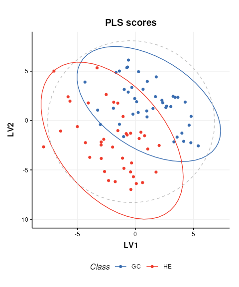
# new DatasetExperiment object from the PLS scores
DE2 = DatasetExperiment(
data = MS[2]$scores$data,
sample_meta = predicted(MS[1])$sample_meta,
variable_meta = data.frame('LV'=c(1,2),row.names = colnames(MS[2]$scores)),
name = 'Illustrativate SVM dataset',
description = 'Generated by applying PLS to the processed Gastric cancer (NMR) dataset'
)
DE2## A "DatasetExperiment" object
## ----------------------------
## name: Illustrativate SVM dataset
## description: Generated by applying PLS to the processed Gastric cancer (NMR) dataset
## data: 83 rows x 2 columns
## sample_meta: 83 rows x 5 columns
## variable_meta: 2 rows x 1 columnsBasic SVM model
The simplest SVM model uses a linear kernel. In
structToolbox the SVM model can be used to
train and apply SVM models. A svm_plot_2d chart object is
provided for visualisation of boundaries in two dimensions.
# SVM model
M = SVM(
factor_name = 'Class',
kernel = 'linear'
)
# apply model
M = model_apply(M,DE2)
# plot boundary
C = svm_plot_2d(factor_name = 'Class')
chart_plot(C,M, DE2)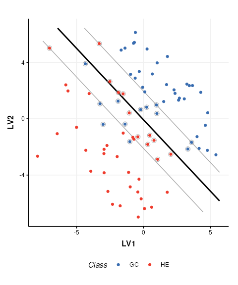
The SVM boundary is plotted in black, the margins in grey and support vectors are indicated by grey circles.
SVM cost function
The SVM cost function applies a penalty to samples on the wrong side of the margins. A high penalty results in a narrow margin and tries to force more samples to be on the correct side of the boundary. A low penalty makes for a wider margin and is less strict about samples being misclassified. The optimal cost to use is data dependent.
# low cost
M$cost=0.01
M=model_apply(M,DE2)
C=svm_plot_2d(factor_name='Species')
g1=chart_plot(C,M,DE2)
# medium cost
M$cost=0.05
M=model_apply(M,DE2)
C=svm_plot_2d(factor_name='Species')
g2=chart_plot(C,M,DE2)
# high cost
M$cost=100
M=model_apply(M,DE2)
C=svm_plot_2d(factor_name='Species')
g3=chart_plot(C,M,DE2)
# plot
prow <- plot_grid(
g1 + theme(legend.position="none"),
g2 + theme(legend.position="none"),
g3 + theme(legend.position="none"),
align = 'vh',
labels = c("Low cost", "Medium cost", "High cost"),
hjust = -1,
nrow = 2
)
legend <- get_legend(
# create some space to the left of the legend
g1 + guides(color = guide_legend(nrow = 1)) +
theme(legend.position = "bottom")
)
plot_grid(prow, legend, ncol=1, rel_heights = c(1, .1))Kernel functions
A number of different kernels can be used with support vector
machines. For the structToolbox wrapper ‘linear’,
‘polynomial’,‘radial’ and ‘sigmoid’ kernels can be specified. Using
kernels allows the boundary to be more flexible, but often require
additional parameters to be specified. The best kernel to use will vary
depending on the dataset, but a common choice is the radial kernel as it
allows high flexibility with a single parameter.
# set a fixed cost for this comparison
M$cost=1
# linear kernel
M$kernel='linear'
M=model_apply(M,DE2)
C=svm_plot_2d(factor_name='Species')
g1=chart_plot(C,M,DE2)
# polynomial kernel
M$kernel='polynomial'
M$gamma=1
M$coef0=0
M=model_apply(M,DE2)
C=svm_plot_2d(factor_name='Species')
g2=chart_plot(C,M,DE2)
# rbf kernel
M$kernel='radial'
M$gamma=1
M=model_apply(M,DE2)
C=svm_plot_2d(factor_name='Species')
g3=chart_plot(C,M,DE2)
# sigmoid kernel
M$kernel='sigmoid'
M$gamma=1
M$coef0=0
M=model_apply(M,DE2)
C=svm_plot_2d(factor_name='Species')
g4=chart_plot(C,M,DE2)
# plot
prow <- plot_grid(
g1 + theme(legend.position="none"),
g2 + theme(legend.position="none"),
g3 + theme(legend.position="none"),
g4 + theme(legend.position="none"),
align = 'vh',
labels = c("Linear", "Polynomial", "Radial","Sigmoid"),
hjust = -1,
nrow = 2
)
legend <- get_legend(
# create some space to the left of the legend
g1 + guides(color = guide_legend(nrow = 1)) +
theme(legend.position = "bottom")
)
plot_grid(prow, legend, ncol = 1, rel_heights = c(1, .1))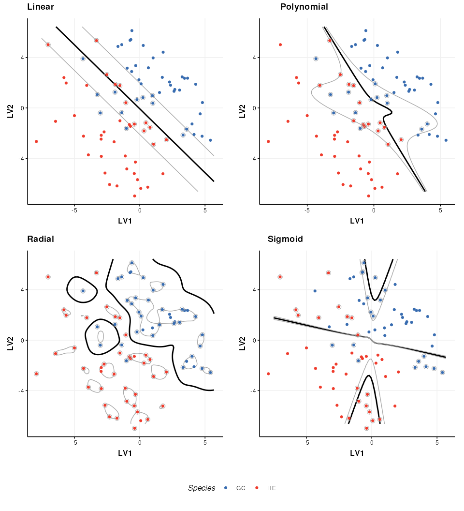
The parameters of a kernel can be used to control the complexity of the boundary. Here I show how the radial kernel parameter “gamma” can be used to change the complexity of the boundary. In combination with the cost parameter (which I keep constant here) this allows for highly flexible boundary models.
# rbf kernel and cost
M$kernel = 'radial'
M$cost = 1
# low gamma
M$gamma=0.01
M=model_apply(M,DE2)
C=svm_plot_2d(factor_name='Species')
g1=chart_plot(C,M,DE2)
# medium gamma
M$gamma=0.1
M=model_apply(M,DE2)
C=svm_plot_2d(factor_name='Species')
g2=chart_plot(C,M,DE2)
# high gamma
M$gamma=1
M=model_apply(M,DE2)
C=svm_plot_2d(factor_name='Species')
g3=chart_plot(C,M,DE2)
# plot
prow <- plot_grid(
g1 + theme(legend.position="none"),
g2 + theme(legend.position="none"),
g3 + theme(legend.position="none"),
align = 'vh',
labels = c("Low gamma", "Medium gamma", "High gamma"),
hjust = -1,
nrow = 2
)
legend <- get_legend(
# create some space to the left of the legend
g1 + guides(color = guide_legend(nrow = 1)) +
theme(legend.position = "bottom")
)
plot_grid(prow, legend, ncol = 1, rel_heights = c(1, .1))Note that best practice would be to select the optimal kernel parameter(s) in combination with the cost parameter (e.g. by 2d grid search) so that the best combination of both is identified.
Exploratory data analysis of LC-MS-based proteomics and metabolomics datasets (STATegra project)
Introduction
The aim of this vignette is to conduct data preprocessing and exploratory analysis of data from the STATegra project (https://www.nature.com/articles/s41597-019-0202-7). For demonstration purposes we will focus on the Proteomics and Metabolomics datasets that are publicly available as part of the STATegra multi-omics dataset.
…the STATegra multi-omics dataset combines measurements from up to 10 different omics technologies applied to the same biological system, namely the well-studied mouse pre-B-cell differentiation. STATegra includes high-throughput measurements of chromatin structure, gene expression, proteomics and metabolomics, and it is complemented with single-cell data. Gomez-Cabrero et al
STATegra includes high-throughput measurements of chromatin structure, gene expression, proteomics and metabolomics, and it is complemented with single-cell data.
LC-MS-based proteomics dataset
The LC-MS-based proteomics dataset from the STATegra multi-omics dataset (see Introduction) can be found on github and must be extracted from the zip file prior to data analysis.
# path to zip
zipfile = "https://raw.github.com/STATegraData/STATegraData/master/Script_STATegra_Proteomics.zip"
## retrieve from BiocFileCache
path = bfcrpath(bfc,zipfile)
temp = bfccache(bfc)
## ... or download to temp location
# path = tempfile()
# temp = tempdir()
# download.file(zipfile,path)
# unzip
unzip(path, files = "Proteomics_01_uniprot_canonical_normalized.txt", exdir=temp)
# read samples
all_data <- read.delim(file.path(temp,"Proteomics_01_uniprot_canonical_normalized.txt"), as.is = TRUE, header = TRUE, sep = "\t")The imported data needs to be converted to
DatasetExperiment format for use with
structToolbox.
# extract data matrix
data = all_data[1:2527,51:86]
# shorten sample names
colnames(data) = lapply(colnames(data), function (x) substr(x, 27, nchar(x)))
# replace 0 with NA
data[data == 0] <- NA
# transpose
data=as.data.frame(t(data))
# prepare sample meta
SM = lapply(rownames(data),function(x) {
s=strsplit(x,'_')[[1]] # split at underscore
out=data.frame(
'treatment' = s[[1]],
'time' = substr(s[[2]],1,nchar(s[[2]])-1) ,
'batch' = substr(s[[3]],6,nchar(s[[3]])),
'condition' = substr(x,1,6) # interaction between treatment and time
)
return(out)
})
SM = do.call(rbind,SM)
rownames(SM)=rownames(data)
# convert to factors
SM$treatment=factor(SM$treatment)
SM$time=ordered(SM$time,c("0","2","6","12","18","24"))
SM$batch=ordered(SM$batch,c(1,3,4,5,6,7))
SM$condition=factor(SM$condition)
# variable meta data
VM = all_data[1:2527,c(1,6,7)]
rownames(VM)=colnames(data)
# prepare DatasetExperiment
DS = DatasetExperiment(
data = data,
sample_meta = SM,
variable_meta = VM,
name = 'STATegra Proteomics',
description = 'downloaded from: https://github.com/STATegraData/STATegraData/'
)
DS## A "DatasetExperiment" object
## ----------------------------
## name: STATegra Proteomics
## description: downloaded from: https://github.com/STATegraData/STATegraData/
## data: 36 rows x 2527 columns
## sample_meta: 36 rows x 4 columns
## variable_meta: 2527 rows x 3 columnsA number of Reporter genes were included in the study. We plot two of them here to illustrate some trends in the data.
# find id of reporters
Ldha = which(DS$variable_meta$Gene.names=='Ldha')
Hk2 = which(DS$variable_meta$Gene.names=='Hk2')
# chart object
C = feature_boxplot(feature_to_plot=Ldha,factor_name='time',label_outliers=FALSE)
g1=chart_plot(C,DS)+ggtitle('Ldha')+ylab('expression')
C = feature_boxplot(feature_to_plot=Hk2,factor_name='time',label_outliers=FALSE)
g2=chart_plot(C,DS)+ggtitle('Hk2')+ylab('expression')
plot_grid(g1,g2,nrow=1,align='vh',axis='tblr')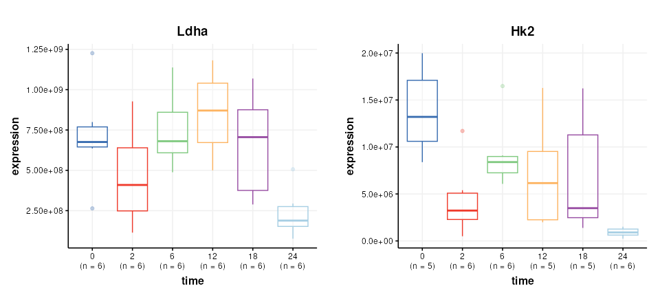
Data transformation
The data is log2 transformed, then scaled such that the mean of the
medians is equal for all conditions. These steps are available in
structToolbox using log_transform and
mean_of_medians objects.
# prepare model sequence
M = log_transform(
base=2) +
mean_of_medians(
factor_name = 'condition')
# apply model sequence
M = model_apply(M,DS)
# get transformed data
DST = predicted(M)The Reporter genes are plotted again for comparison.
# chart object
C = feature_boxplot(feature_to_plot=Ldha,factor_name='time',label_outliers=FALSE)
g1=chart_plot(C,DST)+ggtitle('Ldha')+ylab('log2(expression)')
C = feature_boxplot(feature_to_plot=Hk2,factor_name='time',label_outliers=FALSE)
g2=chart_plot(C,DST)+ggtitle('Hk2')+ylab('log2(expression)')
plot_grid(g1,g2,nrow=1,align='vh',axis='tblr')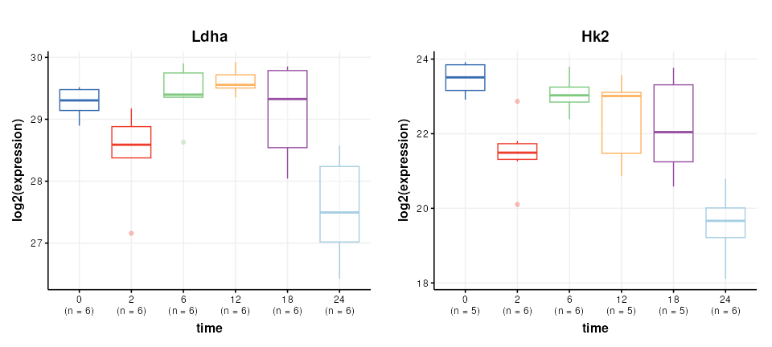
Missing value filtering
Missing value filtering involves removing any feature (gene) where there are at least 3 missing values per group in at least 11 samples.
This specific filter is not in structToolbox at this
time, but can be achieved by combining filter_na_count and
filter_by_name objects.
Specifically, the default output of filter_na_count is
changed to return a matrix of NA counts per class. This output is then
connected to the ‘names’ input of filter_by_names and
converted to TRUE/FALSE using the ‘seq_fcn’ input.
The ‘seq_fcn’ function processes the NA counts before they
are used as inputs for filter_by_names. When data is passed
along the model sequence it passes unchanged through the
filter_na_count object becuase the default output has been
changed, so the filter_na_count and
filter_by_name objects are working together as a single
filter.
# build model sequence
M2 = filter_na_count(
threshold=2,
factor_name='condition',
predicted='na_count') + # override the default output
filter_by_name(
mode='exclude',
dimension='variable',
names='place_holder',
seq_in='names',
seq_fcn=function(x) { # convert NA count pre group to true/false
x=x>2 # more the two missing per group
x=rowSums(x)>10 # in more than 10 groups
return(x)
}
)
# apply to transformed data
M2 = model_apply(M2,DST)
# get the filtered data
DSTF = predicted(M2)Missing value imputation
STATegra uses two imputation methods that are not available as
struct objects, so we create temporary
STATegra_impute objects to do this using some functions
from the struct package.
The first imputation method imputes missing values for any treatment
where values are missing for all samples using a “random value below
discovery”. We create a new struct object using
set_struct_obj in the global environment, and a
“method_apply” method that implements the imputation.
# create new imputation object
set_struct_obj(
class_name = 'STATegra_impute1',
struct_obj = 'model',
params=c(factor_sd='character',factor_name='character'),
outputs=c(imputed='DatasetExperiment'),
prototype = list(
name = 'STATegra imputation 1',
description = 'If missing values are present for all one group then they are replaced with min/2 + "random value below discovery".',
predicted = 'imputed'
)
)
# create method_apply for imputation method 1
set_obj_method(
class_name='STATegra_impute1',
method_name='model_apply',
definition=function(M,D) {
# for each feature count NA within each level
na = apply(D$data,2,function(x){
tapply(x,D$sample_meta[[M$factor_name]],function(y){
sum(is.na(y))
})
})
# count number of samples in each group
count=summary(D$sample_meta[[M$factor_name]])
# standard deviation of features within levels of factor_sd
sd = apply(D$data,2,function(x) {tapply(x,D$sample_meta[[M$factor_sd]],sd,na.rm=TRUE)})
sd = median(sd,na.rm=TRUE)
# impute or not
check=na == matrix(count,nrow=2,ncol=ncol(D)) # all missing in one class
# impute matrix
mi = D$data
for (j in 1:nrow(mi)) {
# index of group for this sample
g = which(levels(D$sample_meta[[M$factor_name]])==D$sample_meta[[M$factor_name]][j])
iv=rnorm(ncol(D),min(D$data[j,],na.rm=TRUE)/2,sd)
mi[j,is.na(mi[j,]) & check[g,]] = iv[is.na(mi[j,]) & check[g,]]
}
D$data = mi
M$imputed=D
return(M)
}
)The second imputation method replacing missing values in any condition with exactly 1 missing value with the mean of the values for that condition. Again we create a new struct object and corresponding method for the the new object to implement the filter.
# create new imputation object
set_struct_obj(
class_name = 'STATegra_impute2',
struct_obj = 'model',
params=c(factor_name='character'),
outputs=c(imputed='DatasetExperiment'),
prototype = list(
name = 'STATegra imputation 2',
description = 'For those conditions with only 1 NA impute with the mean of the condition.',
predicted = 'imputed'
)
)
# create method_apply for imputation method 2
set_obj_method(
class_name='STATegra_impute2',
method_name='model_apply',
definition=function(M,D) {
# levels in condition
L = levels(D$sample_meta[[M$factor_name]])
# for each feature count NA within each level
na = apply(D$data,2,function(x){
tapply(x,D$sample_meta[[M$factor_name]],function(y){
sum(is.na(y))
})
})
# standard deviation of features within levels of factor_sd
sd = apply(D$data,2,function(x) {tapply(x,D$sample_meta[[M$factor_name]],sd,na.rm=TRUE)})
sd = median(sd,na.rm=TRUE)
# impute or not
check=na == 1 # only one missing for a condition
# index of samples for each condition
IDX = list()
for (k in L) {
IDX[[k]]=which(D$sample_meta[[M$factor_name]]==k)
}
## impute
# for each feature
for (k in 1:ncol(D)) {
# for each condition
for (j in 1:length(L)) {
# if passes test
if (check[j,k]) {
# mean of samples in group
m = mean(D$data[IDX[[j]],k],na.rm=TRUE)
# imputed value
im = rnorm(1,m,sd)
# replace NA with imputed
D$data[is.na(D$data[,k]) & D$sample_meta[[M$factor_name]]==L[j],k]=im
}
}
}
M$imputed=D
return(M)
}
)The new STATegra imputation objects can now be used in model
sequences like any other struct object. A final filter is
added to remove any feature that has missing values after
imputation.
# model sequence
M3 = STATegra_impute1(factor_name='treatment',factor_sd='condition') +
STATegra_impute2(factor_name = 'condition') +
filter_na_count(threshold = 3, factor_name='condition')
# apply model
M3 = model_apply(M3,DSTF)
# get imputed data
DSTFI = predicted(M3)
DSTFI## A "DatasetExperiment" object
## ----------------------------
## name: STATegra Proteomics
## description: downloaded from: https://github.com/STATegraData/STATegraData/
## data: 36 rows x 864 columns
## sample_meta: 36 rows x 4 columns
## variable_meta: 864 rows x 3 columnsExploratory analysis
It is often useful to visualise the distribution of values across samples to verify that the transformations/normalisation/filtering etc have been effective.
The values are no longer skewed and show an approximately normal distribution. The boxplots are comparable in width with very few outliers indicated, so the transformations etc have had an overall positive effect.
PCA is used to provide a graphical representation of the data. For comparison with the outputs from STATegra a filter is included to reduce the data to include only the treated samples (IKA)
# model sequence
P = filter_smeta(mode='include',factor_name='treatment',levels='IKA') +
mean_centre() +
PCA(number_components = 2)
# apply model
P = model_apply(P,DSTFI)
# scores plots coloured by factors
g = list()
for (k in c('batch','time')) {
C = pca_scores_plot(factor_name=k,ellipse='none')
g[[k]]=chart_plot(C,P[3])
}
plot_grid(plotlist = g,nrow=1)There does not appear to be a strong batch effect. PC1 is dominated by time point “24” and some potentially outlying points from time points “2” and “0”.
LC-MS-based metabolomics dataset
The LC-MS-based metabolomics dataset from the STATegra multi-omics dataset (see Introduction) can be found on github and must be extracted from zip file prior to data analysis.
# path to zip
zipfile = "https://raw.github.com/STATegraData/STATegraData/master/Script_STATegra_Metabolomics.zip"
## retrieve from BiocFileCache
path = bfcrpath(bfc,zipfile)
temp = bfccache(bfc)
## ... or download to temp location
# path = tempfile()
# temp = tempdir()
# download.file(zipfile,path)
# unzip
unzip(zipfile=path, files = "LC_MS_raw_data.xlsx", exdir=temp)
# read samples
data <- as.data.frame(read.xlsx(file.path(temp,"LC_MS_raw_data.xlsx"),sheet = 'Data'))The imported data needs to be converted to
DatasetExperiment format for use with
structToolbox.
# extract sample meta data
SM = data[ ,1:8]
# add coloumn for sample type (QC, blank etc)
blanks=c(1,2,33,34,65,66)
QCs=c(3,4,11,18,25,32,35,36,43,50,57,64)
SM$sample_type='Sample'
SM$sample_type[blanks]='Blank'
SM$sample_type[QCs]='QC'
# put qc/blank labels in all factors for plotting later
SM$biol.batch[SM$sample_type!='Sample']=SM$sample_type[SM$sample_type!='Sample']
SM$time.point[SM$sample_type!='Sample']=SM$sample_type[SM$sample_type!='Sample']
SM$condition[SM$sample_type!='Sample']=SM$sample_type[SM$sample_type!='Sample']
# convert to factors
SM$biol.batch=ordered(SM$biol.batch,c('9','10','11','12','QC','Blank'))
SM$time.point=ordered(SM$time.point,c('0h','2h','6h','12h','18h','24h','QC','Blank'))
SM$condition=factor(SM$condition)
SM$sample_type=factor(SM$sample_type)
# variable meta data
VM = data.frame('annotation'=colnames(data)[9:ncol(data)])
# raw data
X = data[,9:ncol(data)]
# convert 0 to NA
X[X==0]=NA
# force to numeric; any non-numerics will become NA
X=data.frame(lapply(X,as.numeric),check.names = FALSE)
# make sure row/col names match
rownames(X)=data$label
rownames(SM)=data$label
rownames(VM)=colnames(X)
# create DatasetExperiment object
DE = DatasetExperiment(
data = X,
sample_meta = SM,
variable_meta = VM,
name = 'STATegra Metabolomics LCMS',
description = 'https://www.nature.com/articles/s41597-019-0202-7'
)
DE## A "DatasetExperiment" object
## ----------------------------
## name: STATegra Metabolomics LCMS
## description: https://www.nature.com/articles/s41597-019-0202-7
## data: 66 rows x 152 columns
## sample_meta: 66 rows x 9 columns
## variable_meta: 152 rows x 1 columnsData preprocessing
In the STATegra project the LCMS data was combined with GCMS data and multiblock analysis was conducted. Here only the LCMS will be explored, so the data will be processed differently in comparison to Gomez-Cabrero et al. Some basic processing steps will be applied in order to generate a valid PCA plot from the biological and QC samples.
# prepare model sequence
MS = filter_smeta(mode = 'include', levels='QC', factor_name = 'sample_type') +
knn_impute(neighbours=5) +
vec_norm() +
log_transform(base = 10)
# apply model sequence
MS = model_apply(MS, DE)## Warning in knnimp(x, k, maxmiss = rowmax, maxp = maxp): 3 rows with more than 50 % entries missing;
## mean imputation used for these rowsExploratory analysis
First we will use PCA to look at the QC samples in order to make an assessment of the data quality.
# pca model sequence
M = mean_centre() +
PCA(number_components = 3)
# apply model
M = model_apply(M,predicted(MS))
# PCA scores plot
C = pca_scores_plot(factor_name = 'sample_type',label_factor = 'order',points_to_label = 'all')
# plot
chart_plot(C,M[2])The QC labelled “36” is clearly very different to the other QCs. In STATegra this QC was removed, so we will exclude it here as well. This corresponds to QC H1. STATegra also excluded QC samples measured immediately after a blank, which we will also do here.
# prepare model sequence
MS = filter_smeta(
mode = 'include',
levels='QC',
factor_name = 'sample_type') +
filter_by_name(
mode = 'exclude',
dimension='sample',
names = c('1358BZU_0001QC_H1','1358BZU_0001QC_A1','1358BZU_0001QC_G1')) +
knn_impute(
neighbours=5) +
vec_norm() +
log_transform(
base = 10) +
mean_centre() +
PCA(
number_components = 3)
# apply model sequence
MS = model_apply(MS, DE)## Warning in knnimp(x, k, maxmiss = rowmax, maxp = maxp): 4 rows with more than 50 % entries missing;
## mean imputation used for these rows
# PCA scores plot
C = pca_scores_plot(factor_name = 'sample_type',label_factor = 'order',points_to_label = 'all')
# plot
chart_plot(C,MS[7])Now we will plot the QC samples in context with the samples. There are several possible approaches, and we will apply the approach of applying PCA to the full dataset including the QCs. We will exclude the blanks as it is likely that they will dominate the plot if not removed. All samples from batch 12 were excluded from STATegra and we will replicate that here.
# prepare model sequence
MS = filter_smeta(
mode = 'exclude',
levels='Blank',
factor_name = 'sample_type') +
filter_smeta(
mode = 'exclude',
levels='12',
factor_name = 'biol.batch') +
filter_by_name(
mode = 'exclude',
dimension='sample',
names = c('1358BZU_0001QC_H1',
'1358BZU_0001QC_A1',
'1358BZU_0001QC_G1')) +
knn_impute(
neighbours=5) +
vec_norm() +
log_transform(
base = 10) +
mean_centre() +
PCA(
number_components = 3)
# apply model sequence
MS = model_apply(MS, DE)## Warning in knnimp(x, k, maxmiss = rowmax, maxp = maxp): 2 rows with more than 50 % entries missing;
## mean imputation used for these rows
# PCA scores plots
C = pca_scores_plot(factor_name = 'sample_type')
# plot
chart_plot(C,MS[8])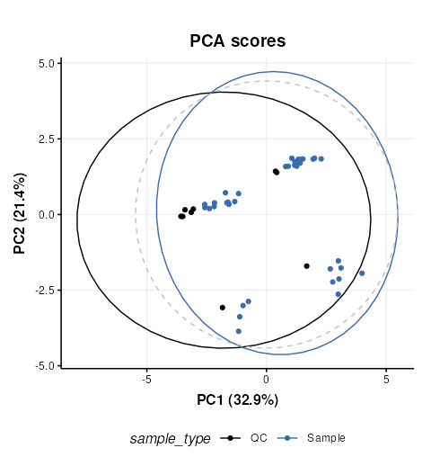 The QCs appear to representative of the samples, but there are strong clusters in the data, including the QC samples which have no biological variation. There is likely to be a number of ‘low quality’ features that should be excluded, so we will do that now, and use more sophisticated normalisation (PQN) and scaling methods (glog).
MS = filter_smeta(
mode = 'exclude',
levels = '12',
factor_name = 'biol.batch') +
filter_by_name(
mode = 'exclude',
dimension='sample',
names = c('1358BZU_0001QC_H1',
'1358BZU_0001QC_A1',
'1358BZU_0001QC_G1')) +
blank_filter(
fold_change = 20,
qc_label = 'QC',
factor_name = 'sample_type') +
filter_smeta(
mode='exclude',
levels='Blank',
factor_name='sample_type') +
mv_feature_filter(
threshold = 80,
qc_label = 'QC',
factor_name = 'sample_type',
method = 'QC') +
mv_feature_filter(
threshold = 50,
factor_name = 'sample_type',
method='across') +
rsd_filter(
rsd_threshold=20,
qc_label='QC',
factor_name='sample_type') +
mv_sample_filter(
mv_threshold = 50) +
pqn_norm(
qc_label='QC',
factor_name='sample_type') +
knn_impute(
neighbours=5,
by='samples') +
glog_transform(
qc_label = 'QC',
factor_name = 'sample_type') +
mean_centre() +
PCA(
number_components = 10)
# apply model sequence
MS = model_apply(MS, DE)
# PCA plots using different factors
g=list()
for (k in c('order','biol.batch','time.point','condition')) {
C = pca_scores_plot(factor_name = k,ellipse='none')
# plot
g[[k]]=chart_plot(C,MS[length(MS)])
}
plot_grid(plotlist = g,align='vh',axis='tblr',nrow=2,labels=c('A','B','C','D'))We can see now that the QCs are tightly clustered. This indicates that the biological variance of the remaining high quality features is much greater than the technical variance represented by the QCs.
There does not appear to be a trend by measurement order (A), which is an important indicator that instrument drift throughout the run is not a large source of variation in this dataset.
There does not appear to be strong clustering related to biological batch (B).
There does not appear to be a strong trend with time (C) but this is likely to be a more subtle variation and might be masked by other sources of variance at this stage.
There is some clustering related to condition (D) but with overlap.
To further explore any trends with time, we will split the data by the condition factor and only explore the Ikaros group. Removing the condition factor variation will potentially make it easier to spot any more subtle trends. We will extract the glog transformed matrix from the previous model sequence and continue from there.
# get the glog scaled data
GL = predicted(MS[11])
# extract the Ikaros group and apply PCA
IK = filter_smeta(
mode='include',
factor_name='condition',
levels='Ikaros') +
mean_centre() +
PCA(number_components = 5)
# apply the model sequence to glog transformed data
IK = model_apply(IK,GL)
# plot the PCA scores
C = pca_scores_plot(factor_name='time.point',ellipse = 'sample')
g1=chart_plot(C,IK[3])
g2=g1 + scale_color_viridis_d() # add continuous scale colouring
plot_grid(g1,g2,nrow=2,align='vh',axis = 'tblr',labels=c('A','B'))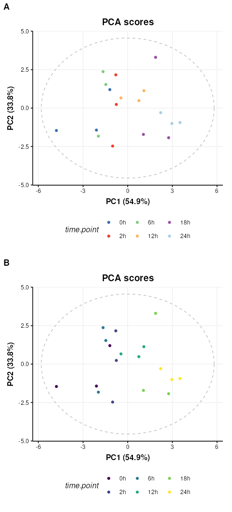
Colouring by groups (A) makes the time point trend difficult to see,
but by adding a ggplot continuous colour scale “viridis”
(B) the trend with time along PC1 becomes much clearer.
Session Info
## R Under development (unstable) (2024-01-23 r85822)
## Platform: x86_64-pc-linux-gnu
## Running under: Ubuntu 22.04.3 LTS
##
## Matrix products: default
## BLAS: /usr/lib/x86_64-linux-gnu/openblas-pthread/libblas.so.3
## LAPACK: /usr/lib/x86_64-linux-gnu/openblas-pthread/libopenblasp-r0.3.20.so; LAPACK version 3.10.0
##
## locale:
## [1] LC_CTYPE=en_US.UTF-8 LC_NUMERIC=C
## [3] LC_TIME=en_US.UTF-8 LC_COLLATE=en_US.UTF-8
## [5] LC_MONETARY=en_US.UTF-8 LC_MESSAGES=en_US.UTF-8
## [7] LC_PAPER=en_US.UTF-8 LC_NAME=C
## [9] LC_ADDRESS=C LC_TELEPHONE=C
## [11] LC_MEASUREMENT=en_US.UTF-8 LC_IDENTIFICATION=C
##
## time zone: UTC
## tzcode source: system (glibc)
##
## attached base packages:
## [1] stats graphics grDevices utils datasets methods base
##
## other attached packages:
## [1] openxlsx_4.2.5.2 cowplot_1.1.3 gridExtra_2.3
## [4] ggplot2_3.4.4 BiocFileCache_2.11.1 dbplyr_2.4.0
## [7] ropls_1.35.4 pmp_1.15.0 structToolbox_1.15.1
## [10] struct_1.15.3 BiocStyle_2.31.0
##
## loaded via a namespace (and not attached):
## [1] DBI_1.2.1 bitops_1.0-7
## [3] MultiDataSet_1.31.0 rlang_1.1.3
## [5] magrittr_2.0.3 e1071_1.7-14
## [7] matrixStats_1.2.0 compiler_4.4.0
## [9] RSQLite_2.3.5 systemfonts_1.0.5
## [11] vctrs_0.6.5 reshape2_1.4.4
## [13] stringr_1.5.1 pkgconfig_2.0.3
## [15] crayon_1.5.2 fastmap_1.1.1
## [17] XVector_0.43.1 labeling_0.4.3
## [19] utf8_1.2.4 rmarkdown_2.25
## [21] itertools_0.1-3 ragg_1.2.7
## [23] bit_4.0.5 purrr_1.0.2
## [25] xfun_0.41 MultiAssayExperiment_1.29.0
## [27] randomForest_4.7-1.1 zlibbioc_1.49.0
## [29] cachem_1.0.8 GenomeInfoDb_1.39.5
## [31] jsonlite_1.8.8 progress_1.2.3
## [33] blob_1.2.4 highr_0.10
## [35] DelayedArray_0.29.1 prettyunits_1.2.0
## [37] parallel_4.4.0 rols_2.31.0
## [39] R6_2.5.1 bslib_0.6.1
## [41] stringi_1.8.3 limma_3.59.1
## [43] GenomicRanges_1.55.2 jquerylib_0.1.4
## [45] Rcpp_1.0.12 bookdown_0.37
## [47] SummarizedExperiment_1.33.3 iterators_1.0.14
## [49] knitr_1.45 IRanges_2.37.1
## [51] Matrix_1.6-5 tidyselect_1.2.0
## [53] abind_1.4-5 yaml_2.3.8
## [55] codetools_0.2-19 curl_5.2.0
## [57] doRNG_1.8.6 lattice_0.22-5
## [59] tibble_3.2.1 plyr_1.8.9
## [61] withr_3.0.0 Biobase_2.63.0
## [63] evaluate_0.23 ontologyIndex_2.11
## [65] desc_1.4.3 isoband_0.2.7
## [67] proxy_0.4-27 zip_2.3.1
## [69] filelock_1.0.3 pillar_1.9.0
## [71] BiocManager_1.30.22 MatrixGenerics_1.15.0
## [73] rngtools_1.5.2 foreach_1.5.2
## [75] stats4_4.4.0 generics_0.1.3
## [77] sp_2.1-3 RCurl_1.98-1.14
## [79] hms_1.1.3 S4Vectors_0.41.3
## [81] munsell_0.5.0 scales_1.3.0
## [83] calibrate_1.7.7 class_7.3-22
## [85] glue_1.7.0 tools_4.4.0
## [87] fs_1.6.3 grid_4.4.0
## [89] impute_1.77.0 missForest_1.5
## [91] colorspace_2.1-0 GenomeInfoDbData_1.2.11
## [93] cli_3.6.2 textshaping_0.3.7
## [95] fansi_1.0.6 viridisLite_0.4.2
## [97] ggthemes_5.0.0 S4Arrays_1.3.3
## [99] dplyr_1.1.4 pls_2.8-3
## [101] pcaMethods_1.95.0 gtable_0.3.4
## [103] sass_0.4.8 digest_0.6.34
## [105] BiocGenerics_0.49.1 SparseArray_1.3.3
## [107] farver_2.1.1 memoise_2.0.1
## [109] htmltools_0.5.7 pkgdown_2.0.7.9000
## [111] lifecycle_1.0.4 httr_1.4.7
## [113] statmod_1.5.0 bit64_4.0.5
## [115] qqman_0.1.9 MASS_7.3-60.2